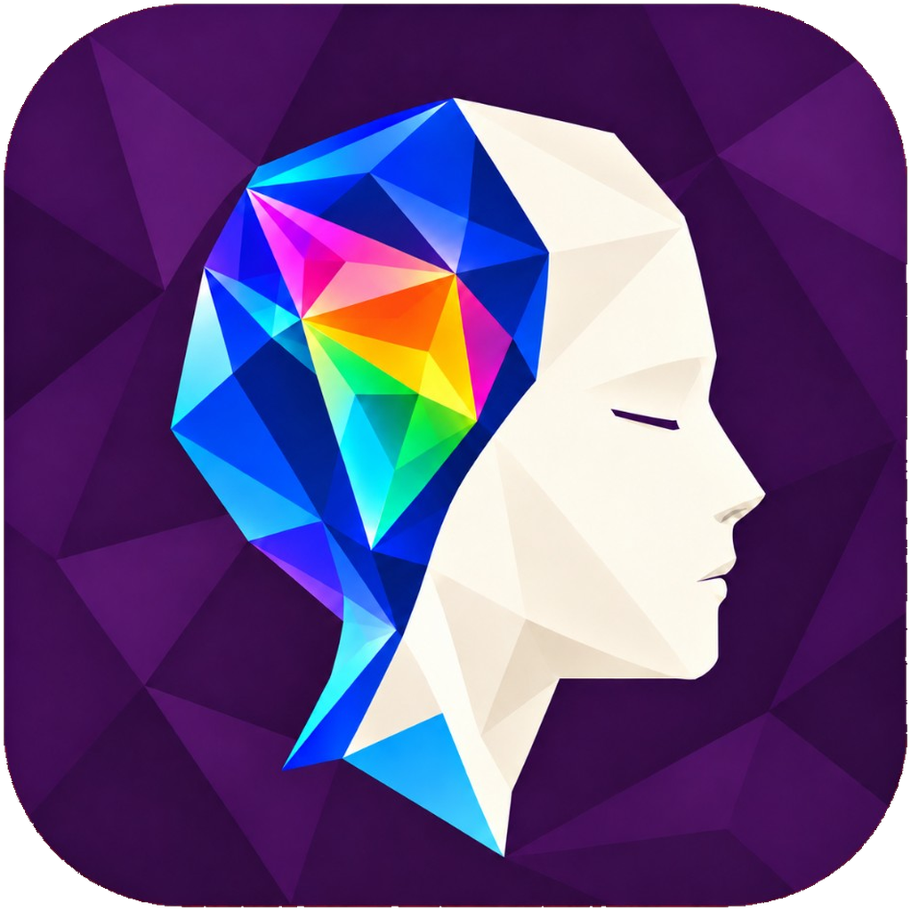

{{ d.why }}
Text equivalent: 51 items at the start of the cycle, falling to 14 open items in week 10. The last two weeks flattened while checks queued behind the Hermes worker pool.
Stage 9 can produce a release proposal only. Turning on the release grant needs a designated authority and reauthentication.
Allowance is a count of agent actions, not a price. No currency is shown until commercial terms are set.
{{ slideBody }}